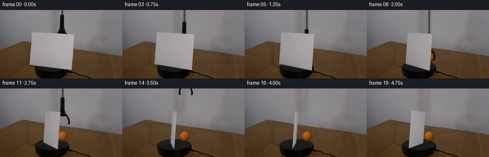
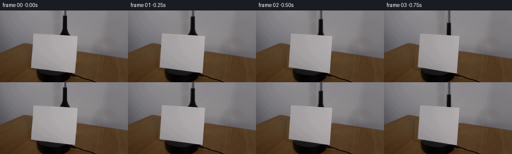

CODING AGENTS AS PIXEL WORLD MODELS
traex/GPT-6-Astra · 0006
点击播放 · 原生 RGB 像素
逐轮保存的候选
回放视频、检查图与代码变化。
每份候选均可单独播放。实际图片检查记录在下方工具轨迹中。
候选 01播放与检查图
点击播放 · 原生 RGB 像素


展开代码变化
--- 上一保存版本
+++ 本次保存版本
@@ -0,0 +1,271 @@
+from pathlib import Path
+import numpy as np
+from PIL import Image, ImageDraw
+import cv2
+from scipy.interpolate import RBFInterpolator
+from scipy.ndimage import gaussian_filter
+import artifact_io
+
+ROOT=Path(__file__).resolve().parent
+W,H,S=256,144,4
+rng=np.random.default_rng(6006)
+original=np.asarray(Image.open(ROOT/'first_frame.png').convert('RGB')).copy()
+im=original.astype(np.float64)
+Y,X=np.mgrid[:H,:W]
+# The four corners of the blank card in the observed frame, in surface order.
+quad=np.float32([[61.6,114.4],[150.1,125.4],[155.7,51.6],[66.4,45.5]])
+uv=np.float32([[0,0],[1,0],[1,1],[0,1]])
+cardH=cv2.getPerspectiveTransform(uv,quad)
+
+
+def polygon_mask(points, size=(W*S,H*S)):
+ a=Image.new('L',size)
+ ImageDraw.Draw(a).polygon([tuple(p) for p in np.asarray(points)],fill=255)
+ return np.asarray(a).astype(float)/255
+
+
+def native_polygon(points):
+ return cv2.resize(polygon_mask(np.array(points)*S), (W,H),interpolation=cv2.INTER_AREA)
+
+card_mask=native_polygon(quad)
+remove_card=cv2.dilate((card_mask>.005).astype(np.uint8),np.ones((3,3),np.uint8))
+# Table rear edge is recovered from its unobstructed portions.
+edge=57.65+.155*X
+wall_region=(Y<edge-2)&(Y<93)
+wall_known=wall_region & (remove_card==0)
+wall_known &= ~((X>=119)&(X<=141)&(Y<53))
+wall_known &= (X>35)&(X<201)
+wy,wx=np.where(wall_known)
+sel=np.arange(0,len(wx),13)
+model=RBFInterpolator(np.c_[wx[sel]/85,wy[sel]/85],im[wy[sel],wx[sel]],
+ kernel='thin_plate_spline', smoothing=.025,neighbors=100)
+wall=model(np.c_[X.ravel()/85,Y.ravel()/85]).reshape(H,W,3)
+wall+=rng.normal(0,.20,(H,W,1))
+# Wood's low-frequency illumination and fine real texture are treated separately.
+wood_known=(Y>edge+2)&(Y>67)&(im[:,:,0]-im[:,:,2]>30)&(im[:,:,0]>67)&(remove_card==0)
+wood_known &= ~((X>67)&(X<159)&(Y>106))
+xn=(X-128)/128;yn=(Y-100)/60
+features=np.stack([np.ones_like(xn),xn,yn,xn*xn,xn*yn,yn*yn,xn**3,yn**3],-1)
+coeff=np.linalg.lstsq(features[wood_known],im[wood_known],rcond=None)[0]
+wood=features@coeff
+residual=im-gaussian_filter(im,(2.5,2.5,0))
+# Resample only known tabletop texture, without importing any external imagery.
+mapx=(168+(X-60)*.79+1.4*np.sin(Y/21)).astype(np.float32)
+mapy=(86+(Y-edge)*.74).astype(np.float32)
+mapx=np.clip(mapx,161,249);mapy=np.clip(mapy,86,143)
+tex=cv2.remap(residual.astype(np.float32),mapx,mapy,cv2.INTER_LINEAR)
+wood+=np.clip(tex,-4,4)*.72
+wood+=rng.normal(0,.30,(H,W,1))
+wood_edge=np.clip((Y-edge+0.45)/1.4,0,1)
+reconstruction=wall*(1-wood_edge[:,:,None])+wood*wood_edge[:,:,None]
+# The stationary black turntable. Only its initially occluded area is rebuilt.
+cx,cy,rx,ry=108.7,117.4,35.4,12.4
+q=((X-cx)/rx)**2+((Y-cy)/ry)**2
+sideq=((X-cx)/rx)**2+((Y-(cy+14.5))/ry)**2
+side=((sideq<1)&(Y>=cy)) | ((np.abs(X-cx)<rx)&(Y>=cy)&(Y<cy+14.5))
+sidecol=np.empty_like(im);sidecol[:]=[6,5,4]
+sidecol+= (10*np.exp(-((X-78)/7)**2))[:,:,None]
+sidecol+=rng.normal(0,.45,(H,W,1))
+reconstruction[side]=sidecol[side]
+a=np.clip((1-q)*18,0,1)
+top=np.empty_like(im);top[:]=[25,24,24]
+top+=(3*(1-(Y-cy)/ry)+4*np.exp(-((np.sqrt(q)-.94)/.075)**2))[:,:,None]
+top+=rng.normal(0,.55,(H,W,1))
+reconstruction=reconstruction*(1-a[:,:,None])+top*a[:,:,None]
+base=im.copy()
+base[remove_card>0]=reconstruction[remove_card>0]
+# Remove the grabber from its original location, including its anti-aliased edges.
+tool_region=(X>=119)&(X<=140)&(Y<51)&(card_mask<.01)
+tool_remove=tool_region & ((wall[:,:,0]-im[:,:,0])>9)
+tool_remove=cv2.dilate(tool_remove.astype(np.uint8),np.ones((1,3),np.uint8))>0
+tool_remove &= (card_mask<.02)
+base[tool_remove]=wall[tool_remove]
+base=np.clip(base,0,255).astype(np.float32)
+Image.fromarray(base.astype(np.uint8)).save(ROOT/'.tmp/background.png')
+
+# Use perspective calibration to rotate the actual card texture as a rigid plane.
+van_u=cardH[:,0]/cardH[2,0]
+van_v=cardH[:,1]/cardH[2,1]
+principal=np.array([128.,72.])
+f=np.sqrt(-np.dot(van_u[:2]-principal,van_v[:2]-principal))
+K=np.array([[f,0,128],[0,f,72],[0,0,1.]])
+cam=np.linalg.inv(K)@cardH
+U,V,T=cam[:,0],cam[:,1],cam[:,2]
+normal=np.cross(U/np.linalg.norm(U),V/np.linalg.norm(V))
+# Sample a little inside the boundary to avoid carrying background edge pixels.
+center=quad.mean(0)
+inner=center+(quad-center)*.974
+sourceH=cv2.getPerspectiveTransform(uv,inner.astype(np.float32))
+# Smooth clean paper texture with the observed illumination variations retained.
+card_source=im.astype(np.float32)
+
+# Shaft texture is extended beyond the upper edge, which stays outside the camera.
+# Coordinates of this sprite cover x=115..146 and y=-180..49.
+tx0,ty0,tw,th=115,-180,32,230
+trgb=np.zeros((th,tw,3),np.float32)
+ta=np.zeros((th,tw),np.float32)
+for sy in range(ty0,50):
+ if sy<0:
+ source_y=1+(abs(sy)%7)
+ else:
+ source_y=min(sy,48)
+ row=im[source_y,tx0:tx0+tw]
+ bg=wall[source_y,tx0:tx0+tw]
+ # Restrict segmentation to the tool, never to the sheet behind it.
+ hit=(bg[:,0]-row[:,0]>14)
+ if sy>=49:
+ hit=(wall[48,tx0:tx0+tw,0]-im[48,tx0:tx0+tw,0]>14)
+ if not hit.any():continue
+ inds=np.flatnonzero(hit); l,r=inds[0],inds[-1]
+ alpha=np.zeros(tw)
+ alpha[l:r+1]=1
+ # Preserve subpixel coverage at both outermost pixels.
+ for j in [l,r]:
+ alpha[j]=np.clip((bg[j,0]-row[j,0])/max(bg[j,0]-25,1),.10,1)
+ for j in [l-1,r+1]:
+ if 0<=j<tw:
+ alpha[j]=np.clip((bg[j,0]-row[j,0])/max(bg[j,0]-25,1),0,.65)
+ fg=np.where(alpha[:,None]>1e-5,(row-bg*(1-alpha[:,None]))/np.maximum(alpha[:,None],1e-5),0)
+ trgb[sy-ty0]=np.clip(fg,0,255)
+ ta[sy-ty0]=alpha
+
+YY,XX=np.mgrid[:H*S,:W*S]
+xx=(XX+.5)/S-.5; yy=(YY+.5)/S-.5
+
+def smooth(t):
+ t=np.clip(t,0,1)
+ return t*t*(3-2*t)
+
+
+def down(a):
+ return cv2.resize(a,(W,H),interpolation=cv2.INTER_AREA)
+
+
+def composite_premul(out,color,alpha):
+ # color is premultiplied at the supersampled resolution.
+ a=down(alpha)
+ c=down(color)
+ return out*(1-a[:,:,None])+c
+
+
+def ball_layer(bx,by,r,turn=0):
+ nx=(xx-bx)/r;ny=(yy-by)/r
+ rr=nx*nx+ny*ny
+ z=np.sqrt(np.clip(1-rr,0,1))
+ alpha=np.clip((1-np.sqrt(rr))*r*S+.5,0,1)
+ # Soft overhead-left light and weak warm table bounce.
+ light=np.maximum(0,-.38*nx-.60*ny+.705*z)
+ illumination=.44+.57*light
+ rgb=np.array([179.,89.,22.])[None,None,:]*illumination[:,:,None]
+ rgb+=np.stack([5*z,7*z,7*z],-1)
+ # Orange felt's fine, non-uniform albedo is stable on the ball surface.
+ fiber=(np.sin(nx*137+ny*81+z*35)*np.sin(ny*111-nx*67)+.55*np.sin(nx*279+ny*171))
+ rgb+=fiber[:,:,None]*2.1
+ # Cream-colored curved seam on the sphere, with a narrow recessed edge.
+ a=np.deg2rad(18+turn)
+ sx=nx*np.cos(a)-ny*np.sin(a)
+ sy=nx*np.sin(a)+ny*np.cos(a)
+ seamdist=np.abs(sx+.50*(1-2*sy*sy)+.05*z)
+ seam=np.clip((.056-seamdist)/.028,0,1)
+ recess=np.exp(-(seamdist/.080)**4)*.10
+ rgb*=1-recess[:,:,None]
+ seamcol=np.array([182.,166.,111.])[None,None,:]*(.53+.45*light[:,:,None])
+ rgb=rgb*(1-seam[:,:,None]*.80)+seamcol*seam[:,:,None]*.80
+ return np.clip(rgb,0,255)*alpha[:,:,None],alpha
+
+
+def bezier(points,n=32):
+ p=np.array(points,float);t=np.linspace(0,1,n)[:,None]
+ return (1-t)**3*p[0]+3*(1-t)**2*t*p[1]+3*(1-t)*t*t*p[2]+t**3*p[3]
+
+
+def grabber_layer(dx,dy,opening):
+ # Affine rasterization preserves the small photographic highlights on the shaft.
+ matrix=np.array([[S,0,S*(tx0+dx)],[0,S,S*(ty0+dy)]],np.float32)
+ a=cv2.warpAffine(ta,matrix,(W*S,H*S),flags=cv2.INTER_LINEAR)
+ c=cv2.warpAffine(trgb*ta[:,:,None],matrix,(W*S,H*S),flags=cv2.INTER_LINEAR)
+ # Two mechanically opening jaws, normally hidden behind the card during placement.
+ rgba=Image.new('RGBA',(W*S,H*S))
+ d=ImageDraw.Draw(rgba)
+ for left in (True,False):
+ if left:
+ pts=[[122.0,45.8],[118.4,51.5],[118.8-3.6*opening,60.6],[122.2-4.5*opening,65.0]]
+ else:
+ pts=[[136.0,45.8],[141.0,51.5],[141.1+3.6*opening,60.7],[138.1+4.5*opening,65.3]]
+ pts=bezier(pts)+[dx,dy]
+ p=[tuple(v*S) for v in pts]
+ d.line(p,fill=(10,14,19,255),width=round(3.5*S),joint='curve')
+ offset=np.array([-.45 if left else .45,-.1])
+ d.line([tuple((v+offset)*S) for v in pts[:24]],fill=(26,36,47,255),width=round(.7*S),joint='curve')
+ tip=pts[-1]*S
+ d.ellipse((tip[0]-1.8*S,tip[1]-1.4*S,tip[0]+1.8*S,tip[1]+1.4*S),fill=(13,14,17,255))
+ arr=np.array(rgba).astype(np.float32)
+ ja=arr[:,:,3]/255
+ c=c*(1-ja[:,:,None])+arr[:,:,:3]*ja[:,:,None]
+ a=a*(1-ja)+ja
+ return c,a
+
+
+def paper_layer(theta):
+ ang=np.deg2rad(theta)
+ u=U*np.cos(ang)+normal*np.linalg.norm(U)*np.sin(ang)
+ h=K@np.column_stack([u,V,T+.5*(U-u)])
+ pts=np.c_[uv,np.ones(4)]@h.T
+ pts=pts[:,:2]/pts[:,2:]
+ # Render the paper edge first, with a true subpixel thickness.
+ edgepts=pts+np.array([.35,.12])
+ aedge=polygon_mask(edgepts*S)
+ edgec=np.zeros((H*S,W*S,3),np.float32)
+ edgec[:]=[113,110,113]
+ c=edgec*aedge[:,:,None]
+ a=aedge.copy()
+ facea=polygon_mask(pts*S)
+ transform=np.diag([S,S,1.])@h@np.linalg.inv(sourceH)
+ warped=cv2.warpPerspective(card_source,transform,(W*S,H*S),flags=cv2.INTER_CUBIC,borderMode=cv2.BORDER_REPLICATE)
+ shade=1-.12*np.sin(ang)
+ if theta>66:
+ shade=.885+.035*np.clip((theta-66)/30,0,1)
+ warped=np.clip(warped*shade,0,255)
+ c=c*(1-facea[:,:,None])+warped*facea[:,:,None]
+ a=a*(1-facea)+facea
+ return c,a,pts
+
+frames=[]
+log=[]
+for i in range(20):
+ t=i/4
+ if i==0:
+ frames.append(original.copy())
+ continue
+ theta=18*t
+ lower=39.1*smooth(t/1.8)
+ by=61.0+lower
+ bx=130.1+.7*smooth(t/1.8)
+ if t>=1.8:
+ by=100.1
+ # The ball remains still after contact. The empty tool opens and withdraws.
+ retract=smooth((t-2.05)/2.15)
+ dy=lower-122*retract
+ dx=.7*smooth(t/1.8)+3*retract
+ opening=smooth((t-1.85)/.35)
+ out=base.copy()
+ # Contact shadow tightens smoothly as the ball reaches the table.
+ contact=smooth(t/1.8)
+ shadow=np.exp(-(((X-bx)/(9.0+5*(1-contact)))**2+((Y-110.9)/(1.1+1.1*(1-contact)))**2)*1.8)
+ out*=1-(shadow*.23*contact)[:,:,None]
+ bc,ba=ball_layer(bx,by,10.35,turn=2.8*smooth(t/1.8))
+ out=composite_premul(out,bc,ba)
+ tc,ta2=grabber_layer(dx,dy,opening)
+ out=composite_premul(out,tc,ta2)
+ pc,pa,points=paper_layer(theta)
+ out=composite_premul(out,pc,pa)
+ frames.append(np.clip(np.rint(out),0,255).astype(np.uint8))
+ log.append([i,theta,bx,by,dy,float(down(ba*(1-pa)).sum())])
+frames=np.stack(frames)
+assert frames.shape==(20,144,256,3) and frames.dtype==np.uint8
+assert np.array_equal(frames[0],original)
+np.savetxt(ROOT/'.tmp/motion.txt',np.asarray(log),fmt='%.3f',header='frame angle ball_x ball_y tool_dy visible_ball_area')
+artifact_io.save(frames,ROOT)
+print('Saved',frames.shape,frames.dtype)
+print('Motion: frame, card angle, ball x/y, tool translation, visible ball area')
+print(np.round(log,2))
可观测工具轨迹
实际执行的命令与返回图片。
命令 1exit 0
/bin/bash -lc "ls -la && cat prompt.txt && printf '\\n--- RULES ---\\n' && cat GENERATION_RULES.md"
命令 2exit 0
/bin/bash -lc "cat artifact_io.py && python - <<'PY'
from PIL import Image
import numpy as np
im=np.array(Image.open('first_frame.png').convert('RGB'))
print('shape',im.shape)
# color quantization and symbolic map
q=Image.fromarray(im).resize((128,72)).quantize(colors=14)
pal=np.array(q.getpalette()).reshape(-1,3)
a=np.array(q)
for i in range(14):print(chr(65+i),pal[i],(a==i).sum())
for row in a: print(''.join(chr(65+x) for x in row))
PY"命令 3exit 0
/bin/bash -lc "python - <<'PY'
from PIL import Image
import numpy as np
im=np.array(Image.open('first_frame.png'))
for y in range(0,62,2):
print('y',y, ' '.join(f'{x}:{im[y,x].tolist()}' for x in range(112,143,2)))
print('bright saturated')
a=im.astype(float);m=(a[:,:,0]>a[:,:,1]*1.3)&(a[:,:,0]>100)&(np.indices(a.shape[:2])[0]<70)
y,x=np.where(m); print(list(zip(x,y,a[m].astype(int).tolist())))
PY"命令 4exit 0
/bin/bash -lc "python - <<'PY'
from PIL import Image
import numpy as np
im=np.array(Image.open('first_frame.png')).astype(int)
for y in range(38,144,2):
a=im[y]; grey=(a.max(1)-a.min(1)<15)&(a[:,0]>145);dark=a.max(1)<55
def runs(a):
p=np.r_[False,a,False].astype(int);return list(zip(np.where(np.diff(p)==1)[0],np.where(np.diff(p)==-1)[0]-1))
print(y,'white',runs(grey),'dark',runs(dark))
print('specific grid RGB:')
for y in range(108,144,4):
print(y,' '.join(f'{x}='+','.join(map(str,im[y,x])) for x in range(50,211,10)))
PY"命令 5exit 0
/bin/bash -lc "python - <<'PY'
import importlib.util
for m in ['numpy','PIL','cv2','scipy']: print(m, bool(importlib.util.find_spec(m)))
from PIL import Image
import numpy as np
im=np.array(Image.open('first_frame.png'))
print('region colors at y65,75,85,95,105')
for y in [40,50,60,65,70,75,80,85,90,95,100,110,115,120,125,130]:
print(y,[(x,im[y,x].tolist()) for x in [40,50,58,60,61,62,63,64,65,66,67,68,69,70,100,145,150,152,154,156,158,160,170]])
PY"命令 6exit 0
/bin/bash -lc "python - <<'PY'
from PIL import Image
import numpy as np
im=np.array(Image.open('first_frame.png')).astype(float)
print('Detail lower support: every pixel x55:162, y100:144')
for y in range(100,144):
s=''
for r,g,b in im[y,55:165]:
s += 'C' if r>140 and r-b<18 else ('w' if r>110 and r-b<20 else ('.' if r>65 and r-b>22 else ('#' if r<12 else ('+' if r<40 else ':'))))
print(f'{y:3}',s)
print('Tool tiny full resolution grayscale crop')
for y in range(0,55):
s=''
for r,g,b in im[y,117:145]:
s+='@' if r<20 else ('#' if r<45 else ('+' if r<80 else ('-' if r<110 else ('o' if r<145 else 'C'))))
print(f'{y:3}',s)
PY"命令 7exit 0
/bin/bash -lc "python - <<'PY' import numpy as np TL=np.array([66.5,45.6,1]); TR=np.array([155.8,51.7,1]);BR=np.array([150.,125.3,1]);BL=np.array([61.8,114.2,1]); for a,b,c,d in [(TL,BL,TR,BR),(TL,TR,BL,BR)]: v=np.cross(np.cross(a,b),np.cross(c,d)); print(v/v[-1]) PY"
命令 8exit 0
/bin/bash -lc "python - <<'PY'
import numpy as np, cv2
TL=[66.4,45.5]; TR=[155.7,51.6];BR=[150.1,125.4]; BL=[61.6,114.4]
Q=np.float32([BL,BR,TR,TL]);h=cv2.getPerspectiveTransform(np.float32([[0,0],[1,0],[1,1],[0,1]]),Q); print(h)
a=h[:,0]/h[2,0];b=h[:,1]/h[2,1]; c=np.array([128,72]);f2=-np.dot(a[:2]-c,b[:2]-c);print(a,b,'f',np.sqrt(f2))
K=np.array([[np.sqrt(f2),0,128],[0,np.sqrt(f2),72],[0,0,1]]);e=np.linalg.inv(K)@h
u=e[:,0];v=e[:,1];w=np.cross(u/np.linalg.norm(u),v/np.linalg.norm(v)); print('u',u,'v',v,'w',w,'orthogon',u@v)
for angle in [0,20,40,60,80,100]:
un=u*np.cos(np.deg2rad(angle))+w*np.linalg.norm(u)*np.sin(np.deg2rad(angle))
m=K@np.column_stack([un,v,e[:,2]+.5*(u-un)])
p=np.c_[np.float32([[0,0],[1,0],[1,1],[0,1]]),np.ones(4)]@m.T;p=p[:,:2]/p[:,2:];print(angle,p.round(2))
PY"命令 9exit 0
/bin/bash -lc "python - <<'PY'
import numpy as np
from PIL import Image
im=np.array(Image.open('first_frame.png')).astype(float)
for x in list(range(0,63,4))+list(range(155,256,5)):
inds=np.where((im[:,x,0]-im[:,x,2]>22)&(im[:,x,0]>55))[0]
print(x,inds[0] if len(inds) else '-')
PY"命令 10exit 0
/bin/bash -lc "cat > generate.py <<'PY'
from pathlib import Path
import numpy as np
from PIL import Image, ImageDraw
import cv2
from scipy.interpolate import RBFInterpolator
from scipy.ndimage import gaussian_filter
import artifact_io
ROOT=Path(__file__).resolve().parent
W,H,S=256,144,4
rng=np.random.default_rng(6006)
original=np.asarray(Image.open(ROOT/'first_frame.png').convert('RGB')).copy()
im=original.astype(np.float64)
Y,X=np.mgrid[:H,:W]
# The four corners of the blank card in the observed frame, in surface order.
quad=np.float32([[61.6,114.4],[150.1,125.4],[155.7,51.6],[66.4,45.5]])
uv=np.float32([[0,0],[1,0],[1,1],[0,1]])
cardH=cv2.getPerspectiveTransform(uv,quad)
def polygon_mask(points, size=(W*S,H*S)):
a=Image.new('L',size)
ImageDraw.Draw(a).polygon([tuple(p) for p in np.asarray(points)],fill=255)
return np.asarray(a).astype(float)/255
def native_polygon(points):
return cv2.resize(polygon_mask(np.array(points)*S), (W,H),interpolation=cv2.INTER_AREA)
card_mask=native_polygon(quad)
remove_card=cv2.dilate((card_mask>.005).astype(np.uint8),np.ones((3,3),np.uint8))
# Table rear edge is recovered from its unobstructed portions.
edge=57.65+.155*X
wall_region=(Y<edge-2)&(Y<93)
wall_known=wall_region & (remove_card==0)
wall_known &= ~((X>=119)&(X<=141)&(Y<53))
wall_known &= (X>35)&(X<201)
wy,wx=np.where(wall_known)
sel=np.arange(0,len(wx),13)
model=RBFInterpolator(np.c_[wx[sel]/85,wy[sel]/85],im[wy[sel],wx[sel]],
kernel='thin_plate_spline', smoothing=.025,neighbors=100)
wall=model(np.c_[X.ravel()/85,Y.ravel()/85]).reshape(H,W,3)
wall+=rng.normal(0,.20,(H,W,1))
# Wood's low-frequency illumination and fine real texture are treated separately.
wood_known=(Y>edge+2)&(Y>67)&(im[:,:,0]-im[:,:,2]>30)&(im[:,:,0]>67)&(remove_card==0)
wood_known &= ~((X>67)&(X<159)&(Y>106))
xn=(X-128)/128;yn=(Y-100)/60
features=np.stack([np.ones_like(xn),xn,yn,xn*xn,xn*yn,yn*yn,xn**3,yn**3],-1)
coeff=np.linalg.lstsq(features[wood_known],im[wood_known],rcond=None)[0]
wood=features@coeff
residual=im-gaussian_filter(im,(2.5,2.5,0))
# Resample only known tabletop texture, without importing any external imagery.
mapx=(168+(X-60)*.79+1.4*np.sin(Y/21)).astype(np.float32)
mapy=(86+(Y-edge)*.74).astype(np.float32)
mapx=np.clip(mapx,161,249);mapy=np.clip(mapy,86,143)
tex=cv2.remap(residual.astype(np.float32),mapx,mapy,cv2.INTER_LINEAR)
wood+=np.clip(tex,-4,4)*.72
wood+=rng.normal(0,.30,(H,W,1))
wood_edge=np.clip((Y-edge+0.45)/1.4,0,1)
reconstruction=wall*(1-wood_edge[:,:,None])+wood*wood_edge[:,:,None]
# The stationary black turntable. Only its initially occluded area is rebuilt.
cx,cy,rx,ry=108.7,117.4,35.4,12.4
q=((X-cx)/rx)**2+((Y-cy)/ry)**2
sideq=((X-cx)/rx)**2+((Y-(cy+14.5))/ry)**2
side=((sideq<1)&(Y>=cy)) | ((np.abs(X-cx)<rx)&(Y>=cy)&(Y<cy+14.5))
sidecol=np.empty_like(im);sidecol[:]=[6,5,4]
sidecol+= (10*np.exp(-((X-78)/7)**2))[:,:,None]
sidecol+=rng.normal(0,.45,(H,W,1))
reconstruction[side]=sidecol[side]
a=np.clip((1-q)*18,0,1)
top=np.empty_like(im);top[:]=[25,24,24]
top+=(3*(1-(Y-cy)/ry)+4*np.exp(-((np.sqrt(q)-.94)/.075)**2))[:,:,None]
top+=rng.normal(0,.55,(H,W,1))
reconstruction=reconstruction*(1-a[:,:,None])+top*a[:,:,None]
base=im.copy()
base[remove_card>0]=reconstruction[remove_card>0]
# Remove the grabber from its original location, including its anti-aliased edges.
tool_region=(X>=119)&(X<=140)&(Y<51)&(card_mask<.01)
tool_remove=tool_region & ((wall[:,:,0]-im[:,:,0])>9)
tool_remove=cv2.dilate(tool_remove.astype(np.uint8),np.ones((1,3),np.uint8))>0
tool_remove &= (card_mask<.02)
base[tool_remove]=wall[tool_remove]
base=np.clip(base,0,255).astype(np.float32)
Image.fromarray(base.astype(np.uint8)).save(ROOT/'.tmp/background.png')
# Use perspective calibration to rotate the actual card texture as a rigid plane.
van_u=cardH[:,0]/cardH[2,0]
van_v=cardH[:,1]/cardH[2,1]
principal=np.array([128.,72.])
f=np.sqrt(-np.dot(van_u[:2]-principal,van_v[:2]-principal))
K=np.array([[f,0,128],[0,f,72],[0,0,1.]])
cam=np.linalg.inv(K)@cardH
U,V,T=cam[:,0],cam[:,1],cam[:,2]
normal=np.cross(U/np.linalg.norm(U),V/np.linalg.norm(V))
# Sample a little inside the boundary to avoid carrying background edge pixels.
center=quad.mean(0)
inner=center+(quad-center)*.974
sourceH=cv2.getPerspectiveTransform(uv,inner.astype(np.float32))
# Smooth clean paper texture with the observed illumination variations retained.
card_source=im.astype(np.float32)
# Shaft texture is extended beyond the upper edge, which stays outside the camera.
# Coordinates of this sprite cover x=115..146 and y=-180..49.
tx0,ty0,tw,th=115,-180,32,230
trgb=np.zeros((th,tw,3),np.float32)
ta=np.zeros((th,tw),np.float32)
for sy in range(ty0,50):
if sy<0:
source_y=1+(abs(sy)%7)
else:
source_y=min(sy,48)
row=im[source_y,tx0:tx0+tw]
bg=wall[source_y,tx0:tx0+tw]
# Restrict segmentation to the tool, never to the sheet behind it.
hit=(bg[:,0]-row[:,0]>14)
if sy>=49:
hit=(wall[48,tx0:tx0+tw,0]-im[48,tx0:tx0+tw,0]>14)
if not hit.any():continue
inds=np.flatnonzero(hit); l,r=inds[0],inds[-1]
alpha=np.zeros(tw)
alpha[l:r+1]=1
# Preserve subpixel coverage at both outermost pixels.
for j in [l,r]:
alpha[j]=np.clip((bg[j,0]-row[j,0])/max(bg[j,0]-25,1),.10,1)
for j in [l-1,r+1]:
if 0<=j<tw:
alpha[j]=np.clip((bg[j,0]-row[j,0])/max(bg[j,0]-25,1),0,.65)
fg=np.where(alpha[:,None]>1e-5,(row-bg*(1-alpha[:,None]))/np.maximum(alpha[:,None],1e-5),0)
trgb[sy-ty0]=np.clip(fg,0,255)
ta[sy-ty0]=alpha
YY,XX=np.mgrid[:H*S,:W*S]
xx=(XX+.5)/S-.5; yy=(YY+.5)/S-.5
def smooth(t):
t=np.clip(t,0,1)
return t*t*(3-2*t)
def down(a):
return cv2.resize(a,(W,H),interpolation=cv2.INTER_AREA)
def composite_premul(out,color,alpha):
# color is premultiplied at the supersampled resolution.
a=down(alpha)
c=down(color)
return out*(1-a[:,:,None])+c
def ball_layer(bx,by,r,turn=0):
nx=(xx-bx)/r;ny=(yy-by)/r
rr=nx*nx+ny*ny
z=np.sqrt(np.clip(1-rr,0,1))
alpha=np.clip((1-np.sqrt(rr))*r*S+.5,0,1)
# Soft overhead-left light and weak warm table bounce.
light=np.maximum(0,-.38*nx-.60*ny+.705*z)
illumination=.44+.57*light
rgb=np.array([179.,89.,22.])[None,None,:]*illumination[:,:,None]
rgb+=np.stack([5*z,7*z,7*z],-1)
# Orange felt's fine, non-uniform albedo is stable on the ball surface.
fiber=(np.sin(nx*137+ny*81+z*35)*np.sin(ny*111-nx*67)+.55*np.sin(nx*279+ny*171))
rgb+=fiber[:,:,None]*2.1
# Cream-colored curved seam on the sphere, with a narrow recessed edge.
a=np.deg2rad(18+turn)
sx=nx*np.cos(a)-ny*np.sin(a)
sy=nx*np.sin(a)+ny*np.cos(a)
seamdist=np.abs(sx+.50*(1-2*sy*sy)+.05*z)
seam=np.clip((.056-seamdist)/.028,0,1)
recess=np.exp(-(seamdist/.080)**4)*.10
rgb*=1-recess[:,:,None]
seamcol=np.array([182.,166.,111.])[None,None,:]*(.53+.45*light[:,:,None])
rgb=rgb*(1-seam[:,:,None]*.80)+seamcol*seam[:,:,None]*.80
return np.clip(rgb,0,255)*alpha[:,:,None],alpha
def bezier(points,n=32):
p=np.array(points,float);t=np.linspace(0,1,n)[:,None]
return (1-t)**3*p[0]+3*(1-t)**2*t*p[1]+3*(1-t)*t*t*p[2]+t**3*p[3]
def grabber_layer(dx,dy,opening):
# Affine rasterization preserves the small photographic highlights on the shaft.
matrix=np.array([[S,0,S*(tx0+dx)],[0,S,S*(ty0+dy)]],np.float32)
a=cv2.warpAffine(ta,matrix,(W*S,H*S),flags=cv2.INTER_LINEAR)
c=cv2.warpAffine(trgb*ta[:,:,None],matrix,(W*S,H*S),flags=cv2.INTER_LINEAR)
# Two mechanically opening jaws, normally hidden behind the card during placement.
rgba=Image.new('RGBA',(W*S,H*S))
d=ImageDraw.Draw(rgba)
for left in (True,False):
if left:
pts=[[122.0,45.8],[118.4,51.5],[118.8-3.6*opening,60.6],[122.2-4.5*opening,65.0]]
else:
pts=[[136.0,45.8],[141.0,51.5],[141.1+3.6*opening,60.7],[138.1+4.5*opening,65.3]]
pts=bezier(pts)+[dx,dy]
p=[tuple(v*S) for v in pts]
d.line(p,fill=(10,14,19,255),width=round(3.5*S),joint='curve')
offset=np.array([-.45 if left else .45,-.1])
d.line([tuple((v+offset)*S) for v in pts[:24]],fill=(26,36,47,255),width=round(.7*S),joint='curve')
tip=pts[-1]*S
d.ellipse((tip[0]-1.8*S,tip[1]-1.4*S,tip[0]+1.8*S,tip[1]+1.4*S),fill=(13,14,17,255))
arr=np.array(rgba).astype(np.float32)
ja=arr[:,:,3]/255
c=c*(1-ja[:,:,None])+arr[:,:,:3]*ja[:,:,None]
a=a*(1-ja)+ja
return c,a
def paper_layer(theta):
ang=np.deg2rad(theta)
u=U*np.cos(ang)+normal*np.linalg.norm(U)*np.sin(ang)
h=K@np.column_stack([u,V,T+.5*(U-u)])
pts=np.c_[uv,np.ones(4)]@h.T
pts=pts[:,:2]/pts[:,2:]
# Render the paper edge first, with a true subpixel thickness.
edgepts=pts+np.array([.35,.12])
aedge=polygon_mask(edgepts*S)
edgec=np.zeros((H*S,W*S,3),np.float32)
edgec[:]=[113,110,113]
c=edgec*aedge[:,:,None]
a=aedge.copy()
facea=polygon_mask(pts*S)
transform=np.diag([S,S,1.])@h@np.linalg.inv(sourceH)
warped=cv2.warpPerspective(card_source,transform,(W*S,H*S),flags=cv2.INTER_CUBIC,borderMode=cv2.BORDER_REPLICATE)
shade=1-.12*np.sin(ang)
if theta>66:
shade=.885+.035*np.clip((theta-66)/30,0,1)
warped=np.clip(warped*shade,0,255)
c=c*(1-facea[:,:,None])+warped*facea[:,:,None]
a=a*(1-facea)+facea
return c,a,pts
frames=[]
log=[]
for i in range(20):
t=i/4
if i==0:
frames.append(original.copy())
continue
theta=18*t
lower=39.1*smooth(t/1.8)
by=61.0+lower
bx=130.1+.7*smooth(t/1.8)
if t>=1.8:
by=100.1
# The ball remains still after contact. The empty tool opens and withdraws.
retract=smooth((t-2.05)/2.15)
dy=lower-122*retract
dx=.7*smooth(t/1.8)+3*retract
opening=smooth((t-1.85)/.35)
out=base.copy()
# Contact shadow tightens smoothly as the ball reaches the table.
contact=smooth(t/1.8)
shadow=np.exp(-(((X-bx)/(9.0+5*(1-contact)))**2+((Y-110.9)/(1.1+1.1*(1-contact)))**2)*1.8)
out*=1-(shadow*.23*contact)[:,:,None]
bc,ba=ball_layer(bx,by,10.35,turn=2.8*smooth(t/1.8))
out=composite_premul(out,bc,ba)
tc,ta2=grabber_layer(dx,dy,opening)
out=composite_premul(out,tc,ta2)
pc,pa,points=paper_layer(theta)
out=composite_premul(out,pc,pa)
frames.append(np.clip(np.rint(out),0,255).astype(np.uint8))
log.append([i,theta,bx,by,dy,float(down(ba*(1-pa)).sum())])
frames=np.stack(frames)
assert frames.shape==(20,144,256,3) and frames.dtype==np.uint8
assert np.array_equal(frames[0],original)
np.savetxt(ROOT/'.tmp/motion.txt',np.asarray(log),fmt='%.3f',header='frame angle ball_x ball_y tool_dy visible_ball_area')
artifact_io.save(frames,ROOT)
print('Saved',frames.shape,frames.dtype)
print('Motion: frame, card angle, ball x/y, tool translation, visible ball area')
print(np.round(log,2))
PY
OPENBLAS_NUM_THREADS=1 python generate.py"命令 11exit 0
/bin/bash -lc "python - <<'PY'
from PIL import Image
import numpy as np
im=np.array(Image.open('first_frame.png')).astype(float)
for f in [1,9,12,19]:
a=np.array(Image.open(f'frames/{f:02}.png')).astype(float)
diff=np.abs(a-im).mean(2)
print('\\nFrame',f,'mad',diff.mean(),'max',diff.max(),'background stable',np.max(diff[:,:50]))
for y in range(0,144,3):
s=''
for x in range(45,166,2):
r,g,b=a[y,x]
s+='O' if r>105 and r>g*1.3 else ('C' if r>142 and r-b<20 else ('c' if r>125 and r-b<20 else ('.' if r>60 and r-b>22 else ('#' if r<20 else ('+' if r<50 else ' ')))))
print(s)
base=np.array(Image.open('.tmp/background.png')).astype(float)
for y in [48,55,60,65,70,75,80,85,90,100,105,110,115,120]:
print(y,[(x,base[y,x].astype(int).tolist()) for x in [63,70,80,90,100,110,120,130,140,150,156]])
PY"命令 12exit 0
/bin/bash -lc "python - <<'PY'
from pathlib import Path
from PIL import Image
import numpy as np
p=Path('.')
frames=np.stack([np.array(Image.open(p/'frames'/f'{i:02}.png').convert('RGB')) for i in range(20)])
assert frames.shape==(20,144,256,3)
assert frames.dtype==np.uint8
assert np.array_equal(frames[0],np.array(Image.open('first_frame.png').convert('RGB')))
a=np.load('pixels.npz')['pixels']
assert a.shape==(144,256,20)
packed=(frames[:,:,:,0].astype('uint32')<<16)|(frames[:,:,:,1].astype('uint32')<<8)|frames[:,:,:,2].astype('uint32')
assert np.array_equal(a,packed.transpose(1,2,0))
print('PASS: 20 RGB frames, 256Ã144; 4 fps / 5 seconds; frame 00 exact; packed artifact matches frames.')
print('Outputs:',', '.join(x for x in ['generate.py','pixels.npz','index.html','inspection.png'] if Path(x).exists()))
PY"保存候选 1 份；完成命令 12 次；可验证图片返回 0 张。原始 API 响应与完整日志保留在本地。